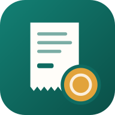

سياسة الخصوصية — عُهدة
ما هو التطبيق
«عُهدة» تطبيق لتسجيل العُهد والمصاريف وحفظ إيصالاتها. الحسابات يُنشئها مدير التطبيق، ولكل مستخدمٍ بياناته الخاصة التي لا يطّلع عليها غيره.
ما نجمعه
ما يُدخله المستخدم بنفسه: الحركات المالية (المبلغ والتاريخ والجهة والتصنيف والملاحظات)، والإيصالات والمستندات المرفوعة، وبيانات الحساب التي يختار إضافتها (الاسم، البريد، الجوال، بيانات المنشأة، الآيبان).
Google Drive
عند ربط Google Drive يطلب التطبيق صلاحية drive.file فقط: أي أنه يرى ويعدّل الملفات التي ينشئها هو فقط (مجلد «عُهدة» وإيصالاته)، ولا يستطيع رؤية أي ملفات أخرى في الدرايف. تُستعمل الصلاحية لحفظ نسخة من الإيصالات المرفوعة، ولا شيء غير ذلك.
قراءة الإيصالات
عند طلب قراءة إيصال، تُرسل صورته إلى خدمة ذكاء اصطناعي (Anthropic) لاستخراج المبلغ والتاريخ والجهة، ولا تُستعمل لأي غرض آخر.
المشاركة والحذف
لا نبيع البيانات ولا نشاركها مع أي طرف لأغراض تسويقية. يمكن طلب حذف الحساب وبياناته بالتواصل مع مدير التطبيق. ويمكن إلغاء صلاحية Google Drive في أي وقت من myaccount.google.com/permissions.
التواصل
info@semak.sa
About the app
Ohda records custody funds and expenses and stores their receipts. Accounts are created by the app administrator; each user's data is private to that user.
What we collect
Only what users enter themselves: transactions (amount, date, vendor, category, notes), uploaded receipts and documents, and optional account details (name, email, mobile, organisation details, IBAN).
Google Drive
When Google Drive is linked, the app requests only the drive.file scope: it can see and edit only the files it creates itself (the «Ohda» folder and its receipts) and cannot see any other file in the Drive. It is used solely to keep a copy of uploaded receipts.
Receipt reading
When a user asks to read a receipt, its image is sent to an AI service (Anthropic) to extract the amount, date and vendor, and for no other purpose.
Sharing and deletion
We do not sell data or share it for marketing. Users can ask the administrator to delete their account and data. Google Drive access can be revoked at any time at myaccount.google.com/permissions.
Contact
info@semak.sa